Schema Design
During the system design interview, it’s critical to have clarity of the schema. In an interview, it’s not critical to choose a particular database right away since that requires digging deeper into the access and storage pattern. Come up with a logical schema first and ensure the integrity and the relationships are clear and how the APIs will fetch the information.
We will design a file storage system with folder structures to showcase a schema design example. We will also have the concept of user-created label files for users.
Defining Schemas
A table should have a primary key that uniquely identifies a row. That is usually a system-generated id, but it doesn’t have to be. You can have an application-level unique ID as well. For an interview, a system-generated ID is probably good enough. Don’t worry if the ID is UUID, integer, or String (not that efficient as an ID); it is usually not the core of the question unless it's a TinyURL related question. The primary key can also be a clustered index which means you can fetch a primary key efficiently. Other tables can use the primary key as a foreign key (FK). A table has columns to store row-level information.
Below, we will create one-to-many and many-to-many structures. A lot of candidates make mistakes here.
Step 1: Create the Tables Needed
User Table
|
user_id |
Folder Table
|
folder_id |
user_id (FK) |
folder_name |
File Table
|
file_id |
user_id (FK) |
file_name |
Label Table
|
label_id |
user_id (FK) |
label_name |
Step 2: Each File and Folder Belongs Into a Folder
Folder Table
|
folder_id |
user_id (FK) |
folder_name |
parent_folder_id (FK) |
File Table
|
file_id |
user_id (FK) |
file_name |
folder_id (FK) |
The parent_folder_id is a foreign key to its table. This table is an example of one-to-many. One folder has many files. One folder has many subfolders.
Step 3: Each File Can Have Many Labels Applied to Them
File Label Table
|
id |
file_id (FK) |
label_id (FK) |
For Label, we create a separate many-to-many table to show that a file can have many labels applied to them, and a label can be applied to many files.
With these tables, we can answer some of the following queries and many more.
“For a given folder, give me all the files and folders in that folder.”
“For a given file, tell me which folder I belong to.”
“For a given label, tell me all the files applied by that label.”
Defining Key Value Schemas
Another approach you can use to deal with some of the schemas is to apply a key-value schema. For example, for the File Label Table, you can also specify file_id → [label_id]. While you’re able to answer “give me all the labels associated with the file” efficiently, it becomes tricky with “give me all the files that belong to a label_id.”
Our recommendation is to keep them simple with relational like abstract schema with no commitment to a database choice until the deep dive or the interviewer asks. Typically as long as the schema is reasonable and can satisfy the queries, it’s not the focus of the interview.
Normalization vs Denormalization
Some people get stuck debating if they should normalize tables or keep them denormalized because of the inefficiency of the join. Normalization doesn’t matter that much in an interview setting since it’s a generic debate that’s usually not unique to the interview question. However, it might be worth bringing up if you identify the read throughput to be an issue.
You can briefly touch on the normalization topic if you want during the deep dive, but in practice, companies do both, and it’s hard to tell which one is better without real-world metrics. Our suggestion is to keep things normalized with the proper logical separation, so the entities are clear and well defined with the interviewer.
Indexing Strategies
When you’re designing the schema, you need to think about the efficiency of your query with your proposed schema. Without proper indexing, it may result in a full table scan. In a system design interview, it’s worth mentioning how you would index to achieve better performance.
Once you’ve designed the schema in an interview, one talking point would be to discuss an indexing option. Sometimes this may be straightforward, sometimes there may be options, but it will give you some credit if you bring it up and come up with a reasonable solution.
What is Indexing?
You can use indexes to locate a piece of data quickly instead of searching for every single row. There are various data structures for indexes, but we will focus on primary and secondary indexes.
Abstractly, an index is just a sorted table that allows the search to be O(Log N) using binary searching with a sorted data structure. Internally, an index can be implemented using B-Tree or LSM, which uses Sorted Strings Table (SST). Since an index table is a sorted table with O(Log N) search, the performance will still degrade once the number of records (N) increases. However, index lookup with O(Log N) is still significantly faster than a full table scan O(N).
|
Reminder |
|
Database indexes are not hashmaps. Hashmap is an in-memory data structure. You may implement an in-memory solution on top of the database, but the index stored on disk isn’t a hashmap. |
Primary Index
When the main table is created, by default, the primary key is also the clustered index which means the primary key on disk sorts the main table itself. Therefore, searching by the primary key will be efficient.
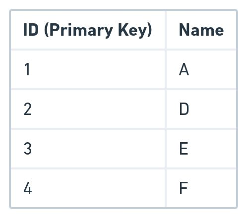
The write to the main table will be efficient if the primary key is sequential but may need to be reshuffled if it’s not and results in a less efficient write. Note that the clustered index doesn’t have to be the primary key.
Secondary Index
Sometimes the clustered primary key may not be efficient enough for your query. You may want to consider adding in a secondary index which is another sorted table to reference the main table record. The advantage is a quick reference to the record of interest, and the disadvantage is the write will be slower with more tables to update. Having additional indexes is still preferable for higher read-to-write ratio applications.
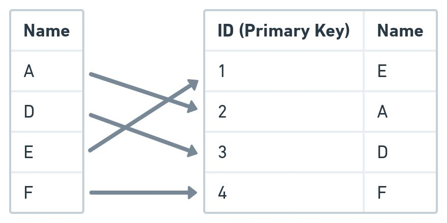
Index Use Cases
Now that we’ve learned about indexes, we will talk about applying them in an interview setting.
Key or Attribute Lookup
The most straightforward lookup is by a key or attribute. For example, imagine you have a table with the following columns:
car_id, color
Car_id is the primary key with no secondary index. If you want to search for a car_id, it will be efficient since car_id is the primary key. However, if you want to search for any car with a specific color, it will have to scan row by row. To improve this, you can add an index on the column color.
Range Lookup
Because the index table is sorted, retrieving rows in a sorted fashion will be efficient if it is indexed. For example, imagine you have the following table where post_id is the primary key and created_time is not indexed.
post_id, created_time
If you want to search for the 20 most recent posts by created_time, you have to retrieve all the records and sort them. If you index on created_time, you can fetch for the latest 20 jobs more efficiently since the index is a sorted column.
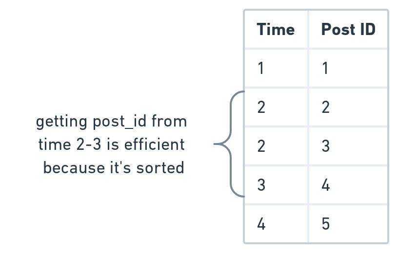
Prefix Search
Since the index table is a sorted table, it’s not surprising that you can search by prefix. For example, if you have a table of previously searched terms with a corresponding score, you can fetch all the terms with the prefix and sort it by score.
In a type-ahead system design interview, the latency to fetch to disk and sort by score is probably not good enough for the question’s latency-sensitive nature, but it is an option worth discussing as a trade-off.
Another use case is geohash, as identified by 9 characters. The longer the geohash, the more precision. For example, imagine you have a square “a” and as you get more granular, you append another letter to it. With prefix search, you’re able to get all the “aa,” “ab,” “ac,” and “ad” if you search for the prefix “a.”
Composite Index
So far, we’ve talked about an index for a single column. This section will talk about indexing on multiple columns and requires a bit more thinking on top of just throwing an index to a column. The idea is the same for row key design for NoSQL design, where NoSQL concatenates the key instead of defining it as separate columns.
Imagine you have a table showing driver status:
|
driver_id |
status |
location |
|
1 |
Waiting |
New York |
|
2 |
Busy |
New York |
|
3 |
Busy |
New York |
|
4 |
Busy |
Chicago |
|
5 |
Waiting |
Chicago |
|
6 |
Busy |
New York |
To demonstrate composite key, we will use two examples:
Option 1: Create an composite index (status, location)
|
driver_id |
status |
location |
|
4 |
Busy |
Chicago |
|
2 |
Busy |
New York |
|
3 |
Busy |
New York |
|
6 |
Busy |
New York |
|
5 |
Waiting |
Chicago |
|
1 |
Waiting |
New York |
Efficient Queries:
Give me all the busy drivers
Give me all the busy drivers in Chicago
Inefficient Queries:
Give me all the drivers in New York since the location is only sorted in the status scope
Option 2: Create an composite index (location, status)
|
driver_id |
status |
location |
|
4 |
Busy |
Chicago |
|
5 |
Waiting |
Chicago |
|
2 |
Busy |
New York |
|
3 |
Busy |
New York |
|
6 |
Busy |
New York |
|
1 |
Waiting |
New York |
Efficient Queries:
Give me all the drivers in Chicago
Give me all the busy drivers in New York
Inefficient Queries:
Give me all the busy drivers since status is only sorted in the location scope
As you can see, the way you index will impact your end design so it’s important to know what your query is.
Geo Index
The world geodatabase is complicated with alternatives like R-Tree, kd-tree, 2dsphere, Google S2, etc. Since geospatial questions still come up quite often with ridesharing services and Yelp, it’s worth talking about approaching the geo index. In a system design interview, it’s doubtful the interviewer is interested in the deep technicalities of geodatabases, so try to keep it simple and proceed.
If you wish to go to disk, here are two simplistic options that are good enough for an interview:
Option 1: Geohash solution like in the prefix search section.
Option 2: Reverse index of location_id to a list of objects like drivers or points of interest.
location_id → [object]
You can represent location_id as a tuple (longitude, latitude). Then, you can calculate the values using the floored longitude and latitude. That way, you don’t need separate storage to store longitude and latitude ranges to a grid ID. For example, (1.11, 2.25) can be floored to the (1, 2) grid and use (1,2) as an ID to a location block.
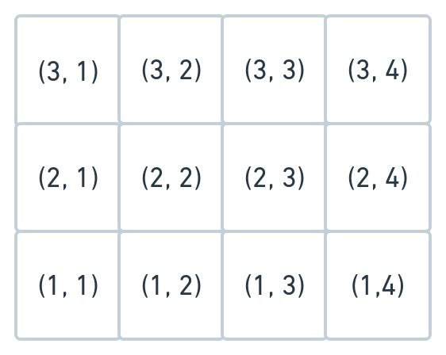
Databases
Definition
A database is an organized collection of data that is stored by the application for durability.
Purpose
Most system design interviews will require permanent storage to persist data and allow other services to read the data. Therefore, choosing the right database is important to the performance of your architecture. In a system design interview, the interviewer will sometimes be looking for your ability to justify the database of your choice based on fundamentals. Some interviewers will dig deeper than others, so the more you are prepared, the more likely you will get a solid score.
How Do I Choose a Database?
Choosing a database is difficult. In practice, engineers could spend weeks making that decision because it is difficult to migrate once the database is in place. In addition, the database is a very complex space with a lot of competing products and complex internals. Therefore, you need to strike the right balance between going too shallow and too deep during an interview. For example, here are some common database discussions that lack depth:
“I will use NoSQL over MySQL because it’s more scalable.”
“I will use a database to store photos.”
“I will use NoSQL because it scales well.”
“I will use Cassandra because it scales well at our company.”
While the above answers are not wrong, it just doesn’t show deep technical database knowledge. Someone without any software engineering experience can give the same level of answer.
In a system design interview, we encourage you to reflect on your design patterns and choose a database that mostly meets the needs of the design. Then, you should give a list of reasons that make that database a stronger choice than the other ones. Justifications like, “I will use Cassandra because it scales well,” are too hand-wavy because other databases also scale well. All databases will scale, otherwise they wouldn’t be competing in the database space. And yes, MySQL scales too.
|
Reminder |
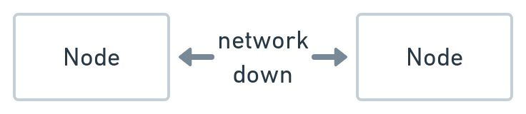
|
CAP theorem is a generalized term to help understand distributed databases.
C stands for consistency, which means all the databases see the same data at the same time. A stands for availability, which means the database is up to serve traffic. P stands for partition tolerance, which means the system continues to work if there’s a network issue between databases.
CAP theorem states you can only have two of the three.
AC: Means there’s no partition with a single machine. CP: Means if there’s a network issue between the databases, the request fails in favor of consistency. AP: Means if there’s a network issue between the databases, the request continues to work in favor of availability. |
Choosing a database is hard. So many people use the CAP theorem to justify a database. You might need to dig deeper than just the CAP theorem in an interview. For example, if you say MySQL is a “CP” database and Cassandra is an “AP” database, what happens if you read from a follower of a MySQL with asynchronous replication? It’s not really “CP” anymore. We think the best way to choose a database is to understand a list of categories of databases and what they are good at. That way, in an interview, you’re able to choose one that’s the most appropriate for your use case.
Sometimes the interviewer may dig a bit deeper into the internals. For example, if you claim Cassandra is an “AP” system, they may ask you why Cassandra is an “AP” system. If you claim HBase is good with chat applications, the interviewer may ask you why not MySQL or MongoDB. These are fair questions that may come up, so you should dig deeper into each of the databases to help you with that.
Databases are very complicated and are often not an apples-to-apples comparison. In an interview, it’s really about if they make sense, and how you sell your justifications to the interviewer. Databases exist to solve a particular problem, and the better you can articulate how a database solves your problem, the better you’ll perform.
Also, keep in mind that you may need more than just one database for different use cases in a single question. For example, imagine you’re storing YouTube videos. You’ll probably need a blob store and a metadata store for the video.
Types of Databases
In this section, we will give a high-level overview of each database type. It's helpful to know the strengths and weaknesses of each database to justify the database of your choice. Although you don’t necessarily need to refer to a specific database like Cassandra in an interview, it’s fair to assume some high-level database categories with the fundamentals.
Interviewers generally aren't too interested in the specific technology. Instead, they’re usually more interested in the fundamentals of the category of the database.
“I would use a RDBMS database since the query patterns are transactional and require non-trivial SQL queries.”
For some databases, we will also discuss a layer deeper into the internals on how the database is good at what it does if the interviewer digs deeper. We’ll provide some popular databases associated with each category if you wish to go deeper. Still, the interviewer shouldn’t go too deep into a specific database internally, unless you claim to have the domain expertise.
Relational Database
When to Use?
In relational databases, it is easy to represent the entities as tables and define the relationship between them. It supports transactions to write to one or many entities and supports simple to complex read queries. You’re able to add in an ad-hoc index to improve the read performance at the expense of write performance. Also, if you have multiple entities with shared attributes, you can fetch results with a joined or unioned table. Also, it supports updates for a record well. Some databases are append-only.
However, it doesn’t mean a relational database is efficient at all the queries. So you need to think about the query you’re making and have some intuition on whether it’ll be efficient for the relational database.
In a system design interview, you can consider using a relational database unless you find a better reason to use another database choice.
|
Reminder |
|
Don’t fall into the trap of saying relational databases don’t scale. Relational databases do scale, and all big companies use them. However, relational databases may not scale for particular use cases, and there are better options, and you should be clear about why. For example, if the use case is metrics collection where there’s a high write ingestion without the need to join tables and is append-only, a relational database probably “doesn’t scale” for that use case. |
Advanced Concepts
Most traditional relational databases use B-Tree based indexing, which is better for reads and less good for writes.
Relational databases can provide stronger data integrity through transaction guarantee by enforcing constraint through entities through foreign keys. For example, if you’re designing a file system with a table folder and a table file. If the folder table has a column called number_of_files, you may have a transaction to add a file in that folder and increase number_of_files by 1. RDBMS does this well by providing transactions to this operation. If the database increases number_of_files by 1 first and the operation to add a row to the file table fails, number_of_files will get rolled back.
|
Reminder |
|
Many resources will claim that relational databases have good ACID properties, so it’s worth looking into it quickly. However, ACID is a very high-level term that isn’t necessarily unique to relational databases. For example, it’s possible to have transactions on a row or document level in a NoSQL database. NoSQL also provides strong durability with replications. So, in an interview, don’t argue for relational databases by saying it’s ACID compliant and other databases are not.
Atomicity: The transaction is all-or-none. If the transaction fails, the database will roll back the transaction. Consistency: The transaction doesn’t leave part of the data committed if the transaction fails. Isolation: The transaction keeps other transactions from accessing or writing to the same data until finished. Durability: Guarantees the data will not be lost. |
Examples
MySQL, Postgres.
Document Store
When to Use?
You should use a document database if the data you are storing is unstructured and doesn’t fit well in a relational database. For example, if you’re storing a product catalog where the schema between each product catalog could differ significantly, creating a relational table with all the known columns may be wasteful, since the storage will be sparse. Documents can use formats such as JSON and XML, and if your data fits naturally to those representations, then it’s a good fit.
In an interview setting, the data is usually structured unless the interviewer intentionally sets it up in a way that they’re looking for a document store. When in doubt, favor relational over document since it’s just easier to deal with the flexibility of different queries by having tables.
Examples
MongoDB, Amazon DocumentDB
Columnar Store
When to Use?
The columnar store has a schema that looks the same as a traditional relational database. However, columnar stores are more optimized for OLAP queries to fetch data in a column fashion. For example, assume you have a table for time_stamp | metrics_value. Then, you might query for all the metrics_value from time_0 to time_1. This query pattern is good for analytics databases and time-series databases which have a lot of overlaps.
For a time-series database that stores its data in a columnar fashion, writes happen more frequently than read. Update to any record is rare since most are append-only. When deletion happens, the deletions happen in batches instead of an ad-hoc operation like in a relational database.
In a system design interview, a good candidate for a columnar store would be an analytics dashboard. Most analytics dashboards show some sort of graph with an x-axis and y-axis. And for each graph, you will want to fetch a series of data to be displayed on the dashboard. However, this significantly depends on the dashboard query, so make sure you understand the datas on the dashboard graphs before committing to a columnar store.
Advanced Concepts
Pretend you have a database table that looks like this:
|
Id |
Date |
Hours Played |
Total Score |
|
1 |
1/1 |
5 |
6500 |
|
2 |
1/2 |
6 |
700 |
|
3 |
1/3 |
3 |
500 |
In a normal row oriented relational database, each row is physically stored together:
1, 1/1, 5, 6500
2, 1/2, 6, 700
3, 1/3, 3, 500
So to get all the data for a given row is efficient. If you want to provide a time series of “date” and “total score,” you will need to access multiple rows, which is inefficient. In a columnar store, data is stored in a columnar fashion:
1, 2, 3
1/1, 1/2, ⅓
5, 6, 3
6500, 700, 500
If you want to provide a time series of “date” and “total score,” you can fetch the date and total score columns. This difference becomes more apparent when there are more rows, like in time series and analytics queries.
Another advantage is the ability to compress the data for more efficient storage. As a simplified example, 1, 1, 1, 1, 1, 1, 1, 1, 3, 3, 3, 3, 3, 2, 2, 2, 2, 2, 2 can be compressed to 1:8, 3:5, 2:6 and more apparent when the number of rows becomes longer.
Examples
InfluxDB, Pinot.
Object Store
When to Use?
When you’re designing to store objects like photos, videos, file documents, etc. You need to handle objects differently due to the potential amount of data taking up the bandwidth and storage. Blob stores are immutable. Once stored, you can not change the file. You can change by inserting or appending new data.
If you try to store a blob in a relational database, you will take up a lot of memory on the table and worsen the performance of the regular OLTP transactions.
In a system design interview, good candidates for a blob store would be:
Design Instagram: For Instagram, assuming you’re storing videos and images for each post, you will want to store the videos and images in a blob store.
Log Storage: When you need to store logs, you can consider using an object store to store the log dump.
File Storage: For any files that you need to store, you can use object storage. For example, if the interviewer asks you to design a system that takes in a pdf of CSV and has a data pipeline to process the files, you may want to store the pdf or CSV in the object store and have some pipeline pull from the object store to be processed.
Examples
Amazon S3.
Wide Column Store
When to Use?
Wide column store works well when there’s a lot of data collected at a very high write speed. The read performance is also great when the read targets a row key that is defined.
A wide column store isn’t good when you need to do joins across tables. Although a wide column store doesn’t support ad-hoc modifications to a persisted value, the read query does well when it is append-only.
In an interview, a wide column store can be a good candidate for questions like:
Design Facebook Chat: The chat messages usually come into the system with a high write throughput and typically appends only. On read, it’s usually reading a list of messages for a chat_id.
Design Metrics Collection: For the metrics collection type of question, the write throughput is usually very high because metrics are generally assumed to omit data constantly. Your system has to deal with the high rate of data collection. The read query targets a group of specific device_id’s that omit the metrics without a complex query.
Advanced Discussion
Here’s a brief explanation of a wide column store followed by an example for a chat application.
Row: Collection of column families
Column Family: Collection of columns. Column families are loaded together and stored together.
Column: Consists of name, value, and timestamp. When the database creates a value, it also creates a new version timestamp.
In a system design interview, it’s unlikely you’ll need more than one column family. For a chat application, one possible schema design would be:
Row: chat_id
Column Family: message
Columns: message_id, message_text, author_id, created_time
And you cluster order by created_time which means the columns are sorted by created_time since the typical access pattern of chat is to fetch by timestamp intervals.
From the outside, the term “wide column” is just the schema. However, it’s coupled with some popular databases like Big Table, HBase, and Cassandra. Internally, those wide column databases use LSM indexing strategy, which is more optimized for writes. Also, within a column family, data are stored together physically next to each other for a given row. For example, for a chat application mentioned above, the data might look like the following for a chat_id:
message_id: 1, message_text: “hello” author_id: 1, created_time: t1
message_id: 2, message_text: “sup” author_id: 2, created_time: t2
message_id: 3, message_text: “nm” author_id: 1, created_time: t3
Since these records are physically next to each other, it’s much faster to query.
Replication Strategy
Even within the wide column database type, there are different replication strategies. HBase uses a leader-follower replication, whereas Cassandra uses a leaderless replication. Because of the leaderless replication, Cassandra has to deal with conflicting writes with lower consistency than HBase. In an interview, you can pick one of the two based on your design requirement, and it’s worth talking about your strategy on conflict resolution if you decide to use a leaderless solution like Cassandra.
Examples
Big Table, HBase, Cassandra.
Reverse Index Store
When to Use?
When designing for a search-related problem where you need to build reverse indexes, you can consider a reverse index store.
search(search_query) → [item]
search(term) → [item]
Internally a reverse index is just a key-value store where the key is the term token, and the value is a posting list. A posting list is an abstract term for the item you’re searching for. Here’s a canonical example of a search problem. Imagine you have two documents:
Document 1: “my dog house”
Document 2: “their dog”
The reverse index is going to be:
“dog” → [doc1, doc2]
“house” → [doc1]
“my” → [doc1]
“their” → [doc2]
When a search query “dog OR house” comes in, we can take the union of “dog” and “house” and combine the result, which is doc1 and doc2. When a search query “dog AND house” comes in, we can take the intersection of “dog” and “house” and combine the result, which is just doc1.
Examples
Elastic Search, Lucene.
In-Memory Store
When to Use?
Sometimes you may not need to go to disk if the requirement is to achieve better performance at the cost of worsened durability.
For example, if you need to store the driver locations for a ride-matching service, it’s not critical to have durability since the location changes frequently. If you need the locations for analytics, you can write back to another database. If analytics isn’t a core use case, you don’t need a database here.
For more information on caching strategies, visit the caching chapter.
Examples
Redis, Memcache.
Geo-Spatial Databases
When to Use?
Geospatial databases are great to use for location-based queries. For example, given a coordinator longitude and latitude, give me all the points within a radius, polygon, or custom shape supported by the database.
find_point_of_interest(coordinate) → [point_of_interest]
create_point_of_interest(point_of_interest) → status
Geo-spatial database is helpful for questions like the following:
Design Yelp: For a given point on the map, give me all the interesting points of interest within a particular region.
Design Find My Friend: For a given point on the map, give me all the friends near me.
|
Reminder |
|
Sometimes candidates mention Quadtree as if it is a database. A Quadtree is technically an in-memory data structure, not a database. |
Advanced Discussion
A geodatabase is a very niche database, so it’s doubtful the interviewer will go too deep into this. Don’t overly index on geospatial knowledge if you’re just studying for the interview.
If you want to self-learn to go deeper, in that case, you can go into the 2dsphere index, which essentially divides up the world into multiple levels of granularity of grids and stores them into B-Tree. Another option is Google S2, which uses Hilbert Curve to enumerate the cells.
Examples
Google S2, MongoDB Geo Queries.
ZooKeeper
When to Use?
ZooKeeper is more than just a store. But it’s worth talking about storage since ZooKeeper is commonly used to store configurations and name registries. In addition, you can use ZooKeeper because it provides strong consistency with good fault tolerance to the end-user.
In a system design interview, here are some places where A ZooKeeper may be used:
Shard Manager
You will have a list of physical nodes you need to call for a given logical shard. You can store this information in ZooKeeper. Knowing this might come in handy if the interviewer asks you for more detail about your sharding architecture.
Configuration Manager
If you have an application that needs to read a global configuration service that needs to be strongly consistent, you can consider ZooKeeper.
Leader Election
When you have a chosen leader-follower replication for your database when you’re discussing the fault tolerance of your database, you can mention that ZooKeeper will monitor the health of your leader and follower nodes and perform an election to elect a new leader.
Advanced Discussion
The intuition is that ZooKeeper uses a consensus protocol to ensure the cluster is fault-tolerant by selecting a leader when it is down. It also uses a consensus protocol to ensure the writes are strongly consistent. Strong consistency means that multiple clients read the data as if there is just a single object. In reality, multiple machines are powering this strongly consistent property. This property is also known as linearizable. Since the configuration and name registries have low write-to-read ratios, writes are usually strongly consistent. To scale for reads, you can scale by asynchronously replicating read replicas at the expense of less consistency.
Consensus protocols like Zab, Paxos, and Raft is a very deep and complicated topic. It is unlikely an interviewer will ask you about the nitty-gritty of a consensus protocol unless you have deep experience in that area. There are videos online about Raft to build a good feel of the consensus protocol, but to ask you to prove a consensus protocol will be outside the realm of a generalist interview.
Examples
Chubby, ZooKeeper.
Real-Time Data Update
Use Case
Some interview questions require thinking about how end-users receive updated data from other systems and users while the end-user is online. For example, while other users send messages in a chat system, the end-user needs to see the new messages in real-time. In a notification system, the end-users need to receive a notification whenever a relevant event happens. In a time-series dashboard like a stock graph, users want to see the updated graph as new price feeds come in. Real-time data update is significant since many system interview questions involve pushing updated events from the servers to the clients. Knowing the technical details and the trade-offs will give you opportunities to deep dive.
Short Poll
Short polling is the process during which the client sends a request to fetch updated information periodically.
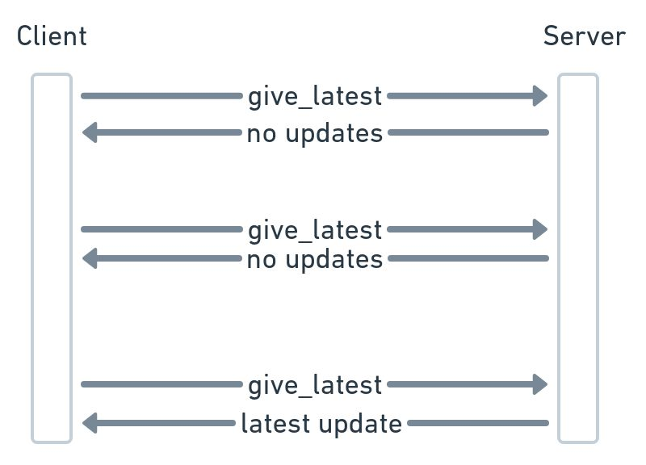
Short polling is not preferable since you may be invoking many requests with no update and overloading the servers unnecessarily. The only possible reason you would ever do this is for a startup and prototype project without the overhead of maintaining server-side connection. But this is unlikely the reason for a scalable system design question.
Long Poll
In long polling, the client sends a request to the server, and the server keeps that connection open until there is data to respond with. Suppose there’s no response after some time, then the connection times out. After the long poll timeout, the client can decide to send another request to the server to wait for an update. Long polling has the advantage over short polling, where the server notifies the client when there is updated data. The downside is the additional overhead and complexity to be connection aware.
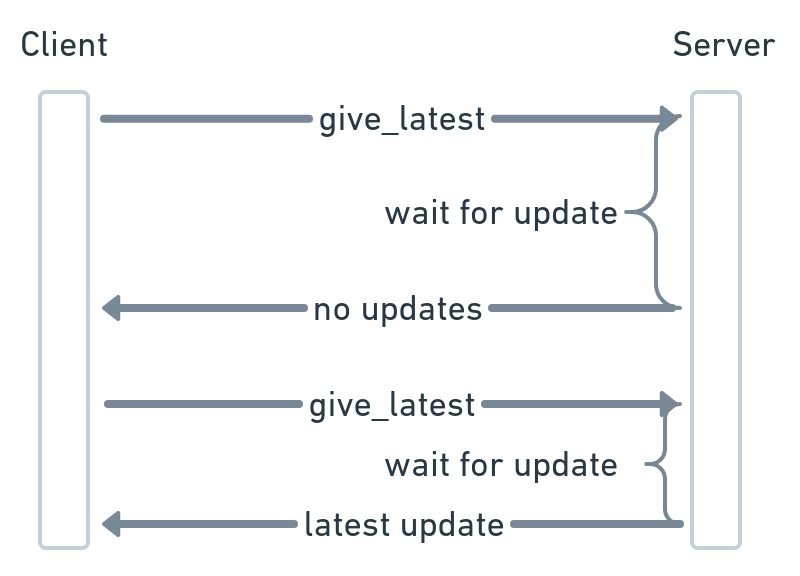
Server-Sent Event
In an SSE (Server-Sent Event), the client requests the server for SSE connection. The server keeps the connection open, but the client doesn’t keep the connection open. SSE is appropriate for applications like stock price feed where only the server pushes data to the client but not the other way around.
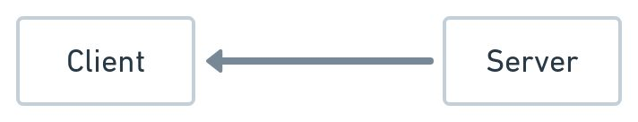
WebSocket
WebSocket is a bidirectional connection between the server and the client. The client establishes the connection with the server using a TCP connection. TCP also means the connection is stateful. The connection life-cycle is tied to a machine. When that machine crashes or restarts, the connection needs to be re-established.
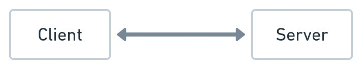
How to Pick a Protocol
There are hardly any good reasons to pick the polling protocols in a system design interview unless it’s for a quick prototype or you need to deliver it fast.
Since WebSocket is bi-directional, there isn’t much polling, and SSE protocols can do what WebSocket can’t do. Then the question is, when would you pick SSE over WebSocket, even if the communication is unidirectional?
For SSE against WebSocket, you can consider SSE as less complex as it uses the traditional HTTP, which means it’s less work to get SSE working than the need for dedicated WebSocket servers to handle the connections. You can opt for SSE for unidirectional events from the server to the client; otherwise, use WebSocket. Opting for a WebSocket solution for unidirectional would be fine as well.
WebSocket is the most commonly used solution for real-time data, so we’ll dive deeper into some of the challenges and deeper talking points.
How to Scale WebSockets
In a system design interview where you need to scale up open connections because there are millions of users, it is important to know the technical details since it’s unlike a typical load balancer in front of app servers. For a WebSocket, you need to establish a stateful connection to a physical server with IP and port.
A common mistake is thinking the connection is established onto the app servers’ load balancer. Connecting directly to the application load balancer doesn’t scale because that single load balancer will run out of memory. You might wonder why the connection can’t be on the app server. The reason is that the client establishes the stateful connection to the load balancer’s machine with an IP and port. Also, maintaining an open connection to the app server’s load balancer isn’t what the load balancer is designed for.
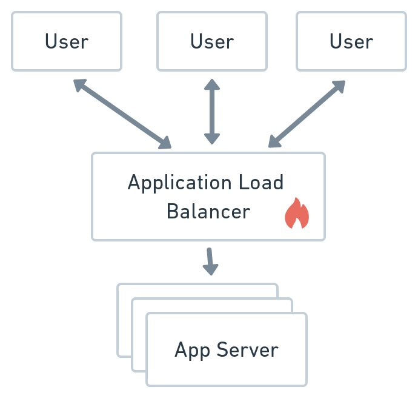
WebSocket Load Balancer
The more common approach is to have a load balancer that hands out the endpoint of a WebSocket proxy farm. Each WebSocket server maintains a list of connections to the user. A connection consists of from_ip, from_port, to_ip, and to_port. The server can use that tuple to figure out which IP and port to use to forward the events back to the client. Since a user can have multiple sessions, you can consider each connection as a session.
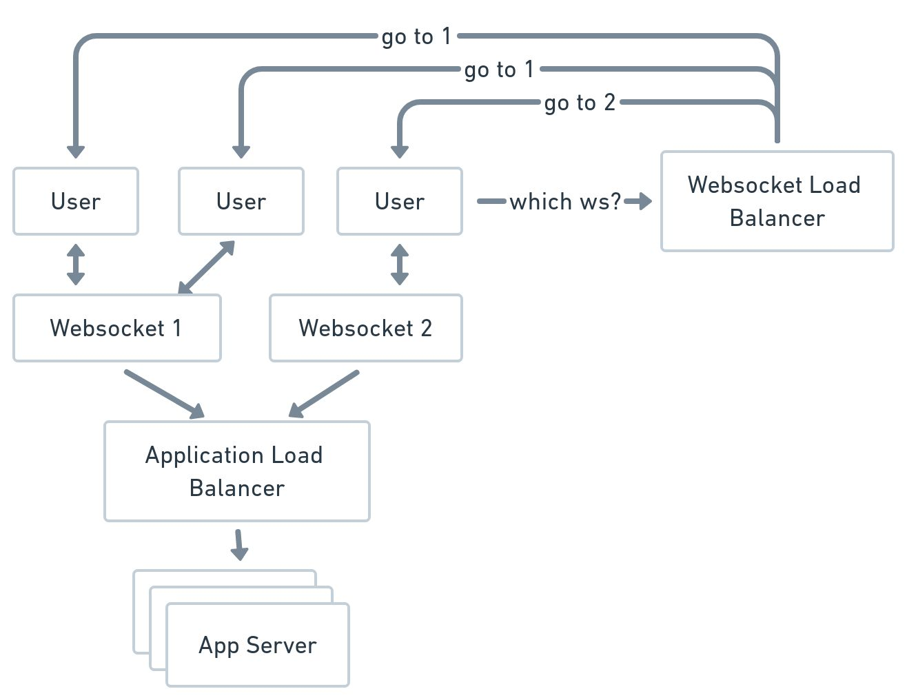
Since the connection to the WebSocket servers is stateful, when the WebSocket server goes down, all the clients connected to the WebSocket server need to reconnect. This disconnection can cause a thundering herd onto other servers. The more connections a server has, the bigger the thundering herd when it goes down. Conversely, the less connections a server can handle, the more servers the system needs. So this is a trade-off discussion point you can potentially have.
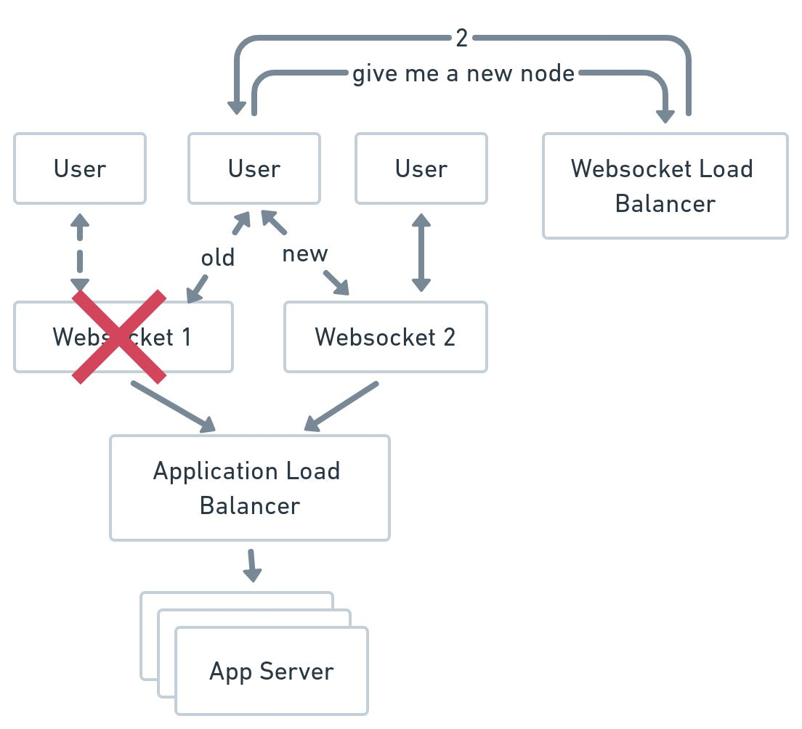
You need to maintain a mapping store from a user attribute to all the WebSocket servers to know which server to forward the message to. For example, say you want to notify all users who live in New York. You can have a store where the key is location and the value is a list of WebSocket servers where the user is from New York.

Is Connection Still Alive?
When you have an open connection via WebSocket, it is important to determine if the client is still alive. There are elegant ways to close a connection by sending a close request, but sometimes due to network interruptions the close request isn’t elegantly called. When that happens, the server won’t know the client has disconnected. Also, sometimes the interruption is temporary and quickly recovers. In those situations, you don’t want the server to have to shut down and reconnect again.
When the client is closed, an open connection implies that the server will continue to send data to the client unnecessarily. As a result, the connection servers may be holding onto dead connections and wasting memory.
For some system design questions like Facebook Chat’s user online status, it is likely they use the open connection as an indicator of online and offline. In addition, for system design questions like designing a notification server where the WebSocket connection is the core of the design, you need to think about the edge case of unexpected client disconnection.
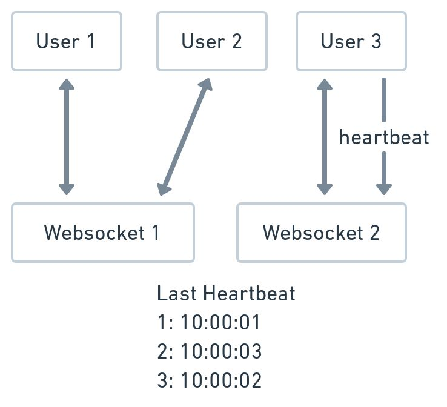
The clients send heartbeats to the server to handle temporarily interrupted connections. Thus, the server knows the client is still alive, and the client knows the server is still alive. Like in any distributed system, the browser may temporarily hang and the network may have an interruption such that the server doesn’t receive the ping as frequently as they expect, but it doesn’t mean the client has disconnected. The way to handle this is to have a timeout setting on the server-side. Every time the server receives a ping, the server remembers the timestamp. If the server doesn’t receive another ping from the client in the next buffer_seconds, then the server determines the connection as dead. You can consider buffer_seconds to fit your needs.
For trade-off discussions in a system design interview, you can talk about the frequency of the ping and the size of the buffer seconds, and how they impact the end-user and the design. A more frequent ping will result in better accuracy of the connection status but will overload the server more. On the other hand, a bigger buffer_second will result in less toggling between online and offline when the client is still online, but results in inaccuracy if the client has disconnected because you have to wait for the buffer_second to expire.